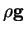
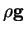
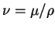
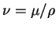

Next: The energy equation
Up: Field equations
Previous: Omissions in the species
Contents
The equation of motion
The equation of motion used here is not that derived by
Bird et al. (1960, pp. 320, 563)
for free convection. Neglecting the variation of
pressure due to motion leads to an overconstrained system so that
the equation for continuity of the mixture,
(2.1) or (2.6),
could not be enforced (see Gresho 1988).
The basic steady-state Navier-Stokes equation (Bird et al. 1960, p. 80) is:
where  and
and  are the pressure and viscosity, and
are the pressure and viscosity, and  is the
body force per unit mass, assumed hereafter to be uniform and downward.
The density and viscosity are
assumed uniform in (2.8), except in the body
force term,
, where
is the
body force per unit mass, assumed hereafter to be uniform and downward.
The density and viscosity are
assumed uniform in (2.8), except in the body
force term,
, where  is replaced by its
linear Taylor series
expansion as a function of the temperature and vapour mass fraction about
some reference state (Bird et al. 1960, p. 563):
is replaced by its
linear Taylor series
expansion as a function of the temperature and vapour mass fraction about
some reference state (Bird et al. 1960, p. 563):
where  and
and  are the thermal and vapour mass fraction coefficients
of volumetric expansion.
This Boussinesq approximation forms the basis of the vast majority of studies
in natural convection. Its consistency and limitations are discussed by
Spiegel and Veronis (1960),
Ostrach (1964),
Chenoweth and Paolucci (1986),
Gebhart et al. (1988, ch. 2)
and
Perez-Cordon and Mengual (1997),
amongst others. Few of the works reviewed in
§3.3 did not use
the approximation, and, as noted there, no qualitatively different
features were found nor were any quantitative effects on the overall
vapour or energy transport rates reported. Particular attention is
drawn to my earlier non-Boussinesq numerical simulations, which gave
results quite consistent with Boussinesq models (McBain 1995,
1997b).
Boyadjiev and Halatchev (1998) came to the same conclusion
for vapour transport from a vertical semi-infinite plate.
Apart from the obvious simplification of the governing equations,
the principal advantage in using the approximation is the increase in
generality of the results, that is, the differences between various species
are reduced to their essentials.
are the thermal and vapour mass fraction coefficients
of volumetric expansion.
This Boussinesq approximation forms the basis of the vast majority of studies
in natural convection. Its consistency and limitations are discussed by
Spiegel and Veronis (1960),
Ostrach (1964),
Chenoweth and Paolucci (1986),
Gebhart et al. (1988, ch. 2)
and
Perez-Cordon and Mengual (1997),
amongst others. Few of the works reviewed in
§3.3 did not use
the approximation, and, as noted there, no qualitatively different
features were found nor were any quantitative effects on the overall
vapour or energy transport rates reported. Particular attention is
drawn to my earlier non-Boussinesq numerical simulations, which gave
results quite consistent with Boussinesq models (McBain 1995,
1997b).
Boyadjiev and Halatchev (1998) came to the same conclusion
for vapour transport from a vertical semi-infinite plate.
Apart from the obvious simplification of the governing equations,
the principal advantage in using the approximation is the increase in
generality of the results, that is, the differences between various species
are reduced to their essentials.
On rearranging the simple potential part of the body force and the pressure
term,
where and  are the vertical coordinate and unit vector,
and  is the kinematic viscosity.
are the vertical coordinate and unit vector,
and  is the kinematic viscosity.
It is obvious from (2.10) that the temperature field must
be known for the distribution of velocity, and therefore vapour, to be
calculable. To this end, the equation of (thermal) energy is obtained in
§2.1.3.
Next: The energy equation
Up: Field equations
Previous: Omissions in the species
Contents
Geordie McBain
2001-01-27